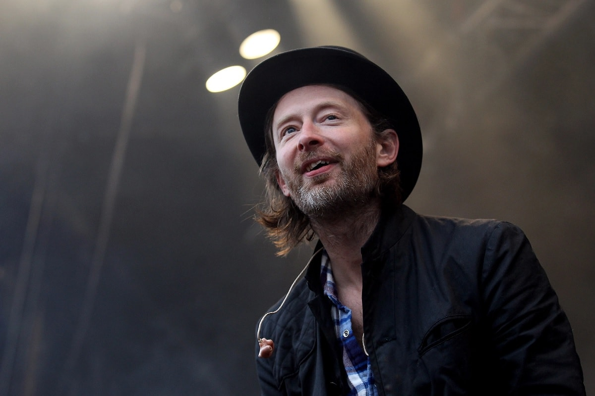
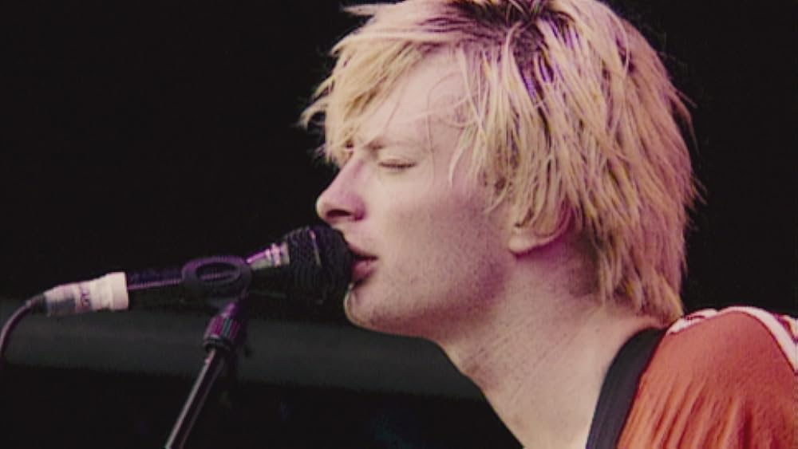
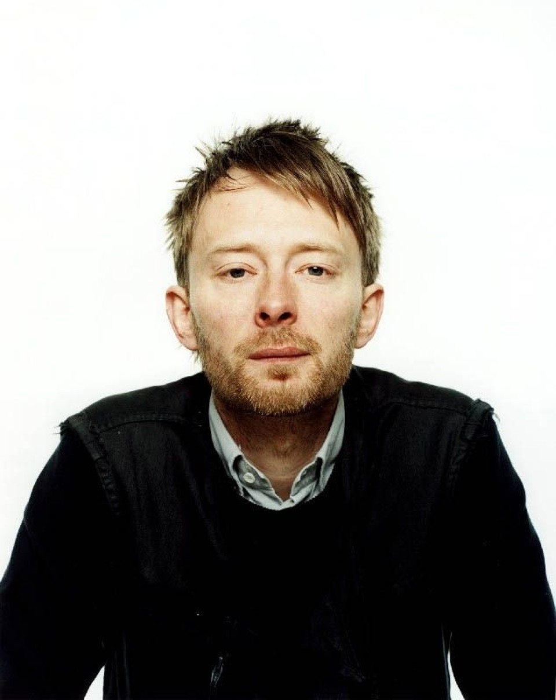

Thomas Edward "Thom" Yorke (nascido em 7 de outubro de 1968 em Wellingborough, Northamptonshire,
Inglaterra), é
o vocalista e compositor da banda britânica de rock alternativo Radiohead. Geralmente
toca guitarra ou piano.
Atualmente, vive em Oxford.



PRÊMIOS/CARREIRA
Grammy Awards - álbum do ano - 1998
Ibiza Music Video Festival - melhor animação - 2016
MTV Video Music Awards - melhor direção de arte - 2003